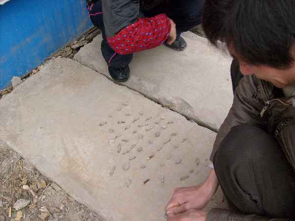
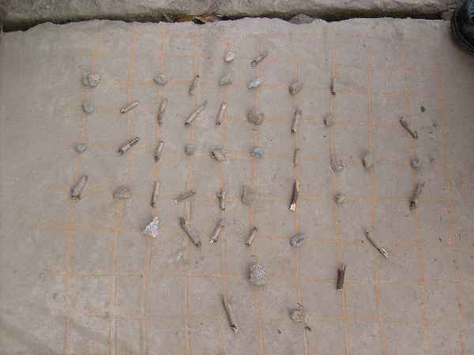

你没有见过的五子棋
#1 你没有见过的五子棋作者：小丸.net 发表时间：2008-12-27 14:58:23

那天修电脑路过一个工地，见一男一女两中年人在地上用小石头和小木杆比划着什么，我就跑过去，一问才知道他们在下五子棋。。。。很佩服他们的想象力。
［ 失落刀 于 2008-12-27 21:30:48 时奖励此帖[金币加 20 威望加1］他们使用的11道的棋盘。
［ 以和为贵 于 2011-9-4 11:31:26 时花20金币送鲜花一朵］
#2 Re:你没有见过的五子棋作者：逆刃 发表时间：2008-12-27 16:10:17
不错不错，比我们以前用作文本画要强多了。#3 Re:你没有见过的五子棋作者：牧羊犬 发表时间：2008-12-27 21:13:57
强悍！
比用小字本和作文本强多了！

#4 Re:你没有见过的五子棋作者：17号蓝星仔 发表时间：2008-12-28 14:04:01
完美的生活写真 如果有什么五子棋照片展 估计这个能拿冠军#5 Re:你没有见过的五子棋作者：岳麓小棋后 发表时间：2008-12-28 14:38:32
想起小岳飞沙上练字,长大后沙场上精忠报国
#6 Re:你没有见过的五子棋作者：掌棋宣传员 发表时间：2008-12-30 1:00:36
哇塞...丘月三打...#7 Re:你没有见过的五子棋作者：老黄 发表时间：2008-12-30 2:25:22
能看出是丘月三打的老兄才真的是强悍
#8 Re:你没有见过的五子棋作者：龙吟风 发表时间：2008-12-31 21:03:50
从初中画圈圈开始得#9 Re:你没有见过的五子棋作者：病维摩 发表时间：2009-3-4 20:06:57
牛人啊，估计是《功夫》里面卖武林秘笈的那位高手，上去问问有没谱卖先。
#10 Re:你没有见过的五子棋作者：越狱行辕 发表时间：2009-3-5 21:29:44
那个能送谱不呵呵#11 Re:你没有见过的五子棋作者：雅匪 发表时间：2009-3-7 1:25:02
荷赛体育类单项一等奖
俺要是评委的话
#12 Re:你没有见过的五子棋作者：刀魂 发表时间：2009-3-7 22:20:17
好像不是斜月三打吧，怎么看怎么像是 瑞星一打。。。#13 Re:你没有见过的五子棋作者：自来水 发表时间：2009-3-18 16:46:19
我比较喜欢在数学用的小方格本上画，那个看起来很真实……#14 Re:你没有见过的五子棋作者：冰雪笑醉 发表时间：2011-9-1 15:50:52
 我吃饭的时候，用餐巾纸做棋盘，棋子用点菜的笔画的圈圈，黑棋用实圈代替，，白棋就空圈
我吃饭的时候，用餐巾纸做棋盘，棋子用点菜的笔画的圈圈，黑棋用实圈代替，，白棋就空圈#15 Re:你没有见过的五子棋作者：wuxiao 发表时间：2011-9-1 16:06:07
"树枝"方左下角优势巨大,"石头"方还不快补一手?#16 Re:你没有见过的五子棋作者：掌棋如烟 发表时间：2011-9-1 16:08:29
话说，我很久前就看过这个图了
#17 Re:Re:你没有见过的五子棋作者：梧桐风 发表时间：2011-9-1 16:22:26
引用：有没有意愿和你家九指在尿布上下几盘？
原文由 掌棋如烟 发表于 2011-9-1 16:08:29 :话说，我很久前就看过这个图了

#18 Re:你没有见过的五子棋作者：鬼灵 发表时间：2011-9-1 16:40:27
高手是不会这么下棋地。#19 Re:你没有见过的五子棋作者：高飞 发表时间：2011-9-1 16:56:14
 我读高中的时候方法更强大，在硬纸上画好棋盘再贴一层透明胶布，可以反复使用。用圆圈和叉叉代表黑白子。
我读高中的时候方法更强大，在硬纸上画好棋盘再贴一层透明胶布，可以反复使用。用圆圈和叉叉代表黑白子。
上课的时候也可以下，一人一个棋盘，只需要和同学相互报坐标就可以了。
#20 Re:Re:Re:你没有见过的五子棋作者：冰雪笑醉 发表时间：2011-9-1 17:05:52
引用：梧桐你太有才了
原文由 梧桐风 发表于 2011-9-1 16:22:26 :引用：有没有意愿和你家九指在尿布上下几盘？
原文由 掌棋如烟 发表于 2011-9-1 16:08:29 :话说，我很久前就看过这个图了
#21 Re:Re:你没有见过的五子棋作者：冰雪笑醉 发表时间：2011-9-1 17:08:59
引用：
原文由 高飞 发表于 2011-9-1 16:56:14 :
上课的时候也可以下，一人一个棋盘，只需要和同学相互报坐标就可以了。
 这个方法不错，高天师你那课桌有没有用漆刷过的，可以拿老师的粉笔在课桌上花棋盘，再用花色粉笔画棋子，
这个方法不错，高天师你那课桌有没有用漆刷过的，可以拿老师的粉笔在课桌上花棋盘，再用花色粉笔画棋子，#22 Re:你没有见过的五子棋作者：奇林 发表时间：2011-9-1 17:51:58
=======上图对应的爱五子棋谱代码如下，以便你拆解：========
h8g8h9h7f9g10g9e9h10i9i7f10i11f8h11h12g11j11j8i8j9j6k9l10j10d10c11e10c10e8e11f11c9c8d8d9g12i10h6g5e7l8l9k7i5f7
======================================================
［ 吉小鼠 于 2011-9-1 17:57:44 时花20金币送鲜花一朵］
［ 梧桐风 于 2011-9-1 18:00:30 时花20金币送鲜花一朵］
［ 冰雪笑醉 于 2011-9-1 18:05:09 时花20金币送鲜花一朵］
［ 掌棋如烟 于 2011-9-1 21:17:54 时花20金币送鲜花一朵］
［ 以和为贵 于 2011-9-4 11:31:57 时花20金币送鲜花一朵］
#23 Re:你没有见过的五子棋作者：吉小鼠 发表时间：2011-9-1 17:57:33
 牛牛如此强大 都把人家下棋的谱给弄出来了。。。。
牛牛如此强大 都把人家下棋的谱给弄出来了。。。。［ 奇林 于 2011-9-1 18:06:08 时花20金币送鲜花一朵］
#24 Re:你没有见过的五子棋作者：梧桐风 发表时间：2011-9-1 18:00:49
不会吧，牛牛这么猛啊~［ 奇林 于 2011-9-1 18:06:26 时花20金币送鲜花一朵］
#25 Re:你没有见过的五子棋作者：慕容晓文 发表时间：2011-9-1 18:16:16
三、五十年前吧，当时的工厂里经常有这类的，不仅有下五子棋的，还有下中国象棋的
呵呵，现在自然是稀罕了
#26 Re:你没有见过的五子棋作者：华夏使者 发表时间：2011-9-1 18:34:54
牛牛，找个时间来点评一下这局棋吧。#27 Re:你没有见过的五子棋作者：极地剑客 发表时间：2011-9-1 19:17:05
计算能力一定很强大
#28 Re:你没有见过的五子棋作者：高飞 发表时间：2011-9-2 0:14:40
笑醉，你那方法不好，很费事，粉笔画的不整齐，而且很容易被发现，
用数学本的格子很好画的，只需要加竖线， 但通常很浪费本子。
所以要用能用橡皮擦的
#29 Re:你没有见过的五子棋作者：悟石 发表时间：2011-9-2 9:13:26
楼主光敬佩一下就完啦？
我在我们小区发现有小孩做作业拿本子下棋，
我直接送一副小木盒五子棋给他了呵呵。
算算看·我送出的小木盒五子棋差不多有20副了
［ 吉小鼠 于 2011-9-2 14:28:06 时花20金币送鲜花一朵］
#30 Re:你没有见过的五子棋作者：簡單 发表时间：2011-9-2 13:13:37
真正的地摊就是这样。。。。#31 Re:Re:你没有见过的五子棋作者：吉小鼠 发表时间：2011-9-2 14:29:29
引用：
原文由 悟石 发表于 2011-9-2 9:13:26 :楼主光敬佩一下就完啦？
我在我们小区发现有小孩做作业拿本子下棋，
我直接送一副小木盒五子棋给他了呵呵。
算算看·我送出的小木盒五子棋差不多有20副了
［ 吉小鼠 于 2011-9-2 14:28:06 时花20金币送鲜花一朵］
好人哇~~~~~~~ 高中时候的我求五子棋。。。。。。。
拿作文本在上课的时候偷下五子棋的伤不起啊。。。。。。。。
［此帖子已被 吉小鼠 在 2011-9-2 14:30:22 编辑过］
#32 Re:你没有见过的五子棋作者：伤情路 发表时间：2011-9-2 16:56:14
还是九指老师犀利。。能看出开局及打点
#33 Re:Re:你没有见过的五子棋作者：奇林 发表时间：2011-9-2 18:49:38
引用：
原文由 伤情路 发表于 2011-9-2 16:56:14 :
还是九指老师犀利。。能看出开局及打点
 你怎么不看22楼呢....
你怎么不看22楼呢....#34 Re:你没有见过的五子棋作者：冰雪笑醉 发表时间：2011-9-2 19:23:21
 22楼很犀利
22楼很犀利［ 奇林 于 2011-9-2 21:11:17 时花20金币送鲜花一朵］
#35 Re:你没有见过的五子棋作者：以和为贵 发表时间：2011-9-4 11:35:54
大开眼界，以前我下乡时曾用玉米粒与黄豆粒与人下过五子棋。
小牛强悍，在我看来就是个眼花缭乱。
［ 奇林 于 2011-9-4 19:24:40 时花20金币送鲜花一朵］
#36 Re:你没有见过的五子棋作者：微微一笑 发表时间：2011-9-4 14:52:59
突然想起来我们小时候也玩过啊，用石头和小木棒的，多大的棋盘忘了，要连几个也忘了...并且我们那时候也不知道什么叫五子棋什么棋的［ 冰雪笑醉 于 2011-9-4 15:52:54 时花20金币送鲜花一朵］
#37 Re:你没有见过的五子棋作者：小小亦默 发表时间：2011-9-5 13:13:38
#38 Re:你没有见过的五子棋作者：孤竹 发表时间：2011-9-5 14:02:56
都在YY，看看人家在几路棋盘上下~#39 Re:你没有见过的五子棋作者：小妖~ 发表时间：2011-9-5 21:45:28
牛牛果然牛。#40 Re:你没有见过的五子棋作者：与郎共五 发表时间：2011-9-5 22:10:37
其实民间流行吃子五子